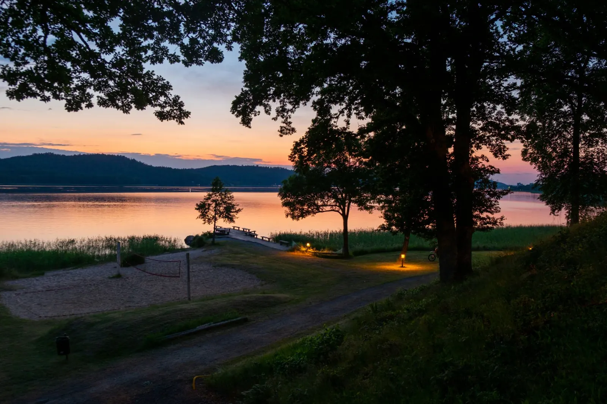

Den porlande bäcken
Gästhuset ligger precis vid en bäck. Somna och vakna till ett rofyllt ljudlandskap – och svalka dig med ett kallbad efter bastun.
Skogsstigar, sjön Åsunden och en egen skid- och cykelanläggning. Här är värdarnas bästa tips runt Pinebo Palace – och fler hittar du i husmanualen i gästhuset.
Lämna bilen en stund. Några av de finaste upplevelserna finns direkt utanför gästhuset.
Gästhuset ligger precis vid en bäck. Somna och vakna till ett rofyllt ljudlandskap – och svalka dig med ett kallbad efter bastun.

Den grönmossiga skogen börjar vid altanen. Ta en promenad bland träden och avsluta dagen i den vedeldade bastun.

Skogen runt gästhuset bjuder på svamp och bär. Ta med en korg på promenaden – vi tipsar gärna om var du ska leta.
En kort runda eller en heldag på leden? De flesta lederna når du inom 20 minuter med bil från gästhuset.
En härlig skogsslinga.
Lassalyckan
En vacker stig med start vid entrén till Kråkebo naturreservat.
Kråkebo naturreservat
En kulturled med natursköna platser, ett 50-tal gamla torp, Jordkulan i Nöre och många fornminnen.
Dalum
Startar vid Lassalyckans friluftsområde och går på slingrande skogsväg ner till Pinebobäcken, förbi ruinerna av gården Rönnåsen och upp till Galtåsen – Västergötlands högsta punkt.
Lassalyckan
Vandringsleden genom Grönahög har flera intressanta stopp längs vägen.
Grönahög–Påbo
Start och mål i charmiga Vegby. Båda lederna når toppen av berget, 238 meter över havet.
Vegby
Ett av södra Sveriges största myrlandskap, med myrar, vattendrag, skogspartier och öar av fast mark – och ett rikt fågelliv.
Mörkö
En trailbana med spännande natur, vid sidan av de breda spåren i området.
Lassalyckan
En omväxlande led som delvis går på en historisk banvall, genom välbevarat odlingslandskap och förbi kvarlevor av den gamla ridvägen.
Marbäck
En vacker vandringsled runt sjön Mogden, en av Hökerums mittpunkter, med flera fornminnen och sevärdheter längs vägen.
Hökerum
Planera efter väder, underlag och egen förmåga. Längder och svårighetsgrader enligt respektive leds beskrivning.
Svalka dig en varm sommardag – flera av badplatserna ligger vid sjön Åsunden.
Gångavstånd från Ulricehamns centrum, precis invid Prångens camping. Långgrunt i cirka 200 meter, med fin sandstrand.
Långgrunt · Sandstrand
Gräsmatta och liten sandstrand. Camping, kiosk och cafeteria finns i närheten.
Gräsmatta · Kiosk
Vid Åsundens norra ände, nära centrum, med stora gräsytor och utsikt över hela norra Åsunden. Lekplatsen Ulricaparken ligger intill, och kallbadhus, kafé, restaurang och beachvolleyplan finns nära. Här finns även särskilda hundbadplatser.
Hundbad · Nära centrum
Restider med bil från Pinebo Palace – till mataffären, skidbacken eller storstaden.
| Utflyktsmål | Det här väntar | Restid med bil |
|---|---|---|
| Coop | Närmaste mataffären | 4 min |
| Willys | Mataffär | 7 min |
| ICA Maxi Stormarknad | Stormarknad med stort utbud | 10 min |
| Ulricehamn Ski Bike Hike | Öppet året runt. På vintern 8 nedfarter, 7 liftar, barnområde och skidskola – på sommaren en bike park med 12 downhill-leder, från lätta till extrema. skibikehike.se | 13 min |
| Borås | Större stad med shopping och restauranger | 30 min |
| Göteborg | Storstad vid västkusten | 1 h 10 min |
Ta en promenad i vårsolen längs någon av vandringslederna och lyssna på bäcken som porlar förbi gästhuset.
Bada i Åsunden, cykla i bike parken på Ski Bike Hike och grilla på altanen i kvällssolen.
Plocka svamp och bär i skogen runt gästhuset och vandra när lövträden skiftar färg.
Åk skidor på Ulricehamn Ski Bike Hike, 13 minuter bort – och värm dig i den vedeldade bastun och spabadet när du kommer hem.

Börja dagen i lugn och ro med ljudet från bäcken.
En skogsslinga på 4,1 km vid Lassalyckan – lagom för en förmiddag.
Ta en paus vid Sturebadet nära centrum, med kafé, restaurang och hundbad.
Avsluta i den vedeldade bastun, svalka dig i kallbadet med bäckvatten och värm dig i spabadet.
Bo i ett hundvänligt gästhus i skogen utanför Ulricehamn – med vedeldad bastu, kallbad och spabad.